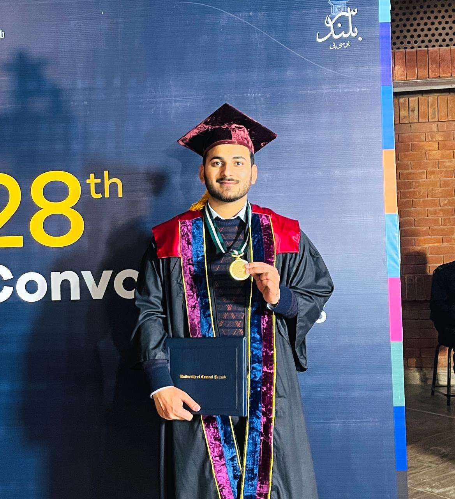
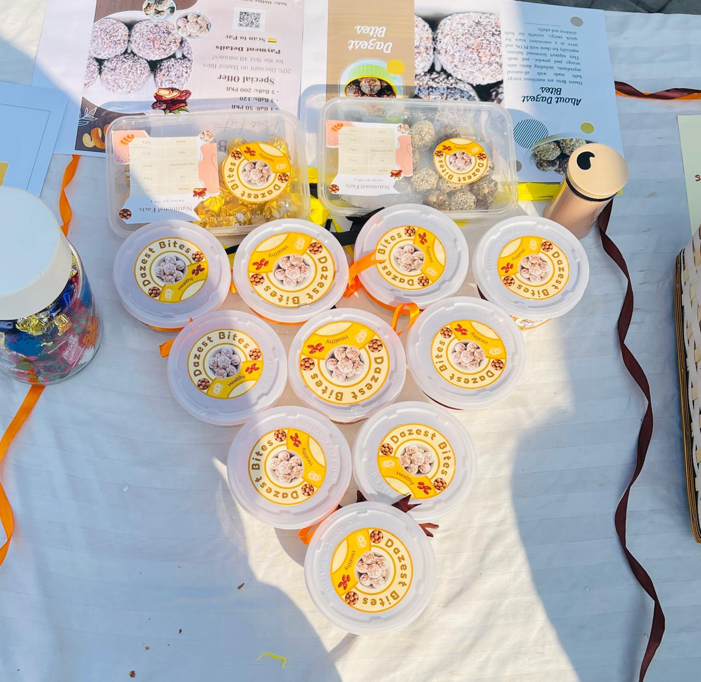
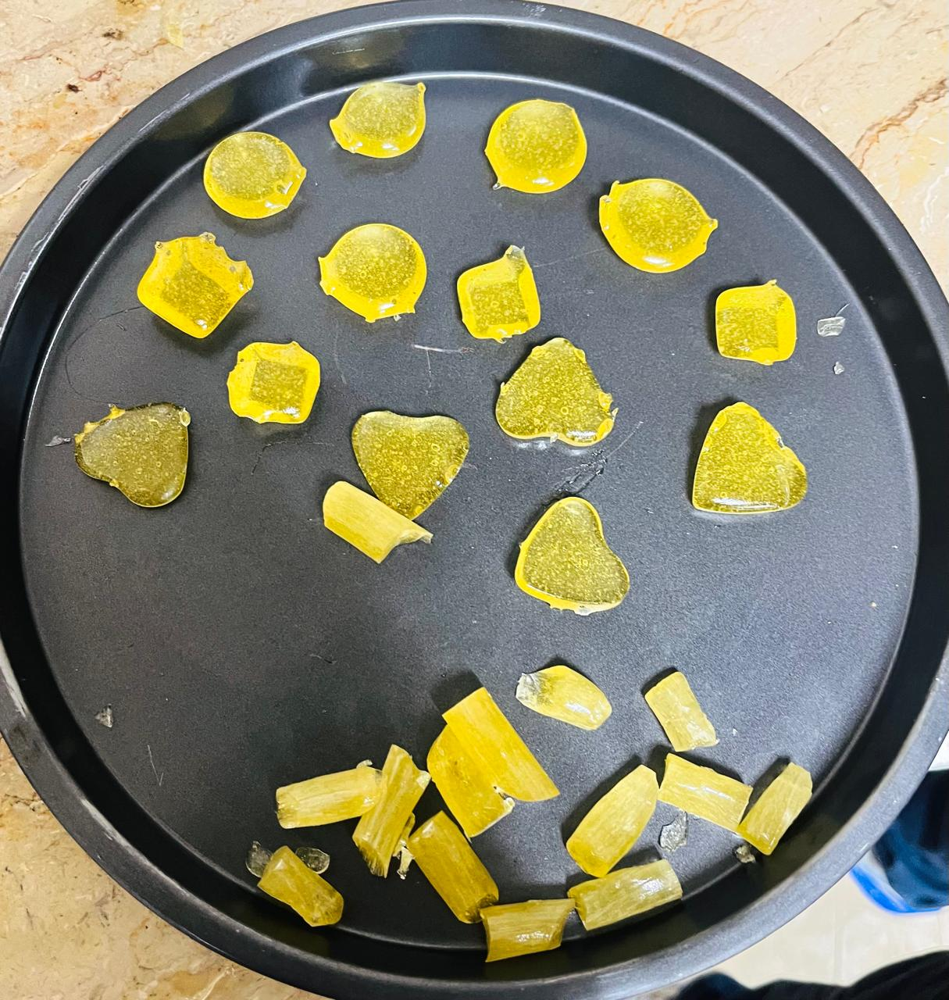
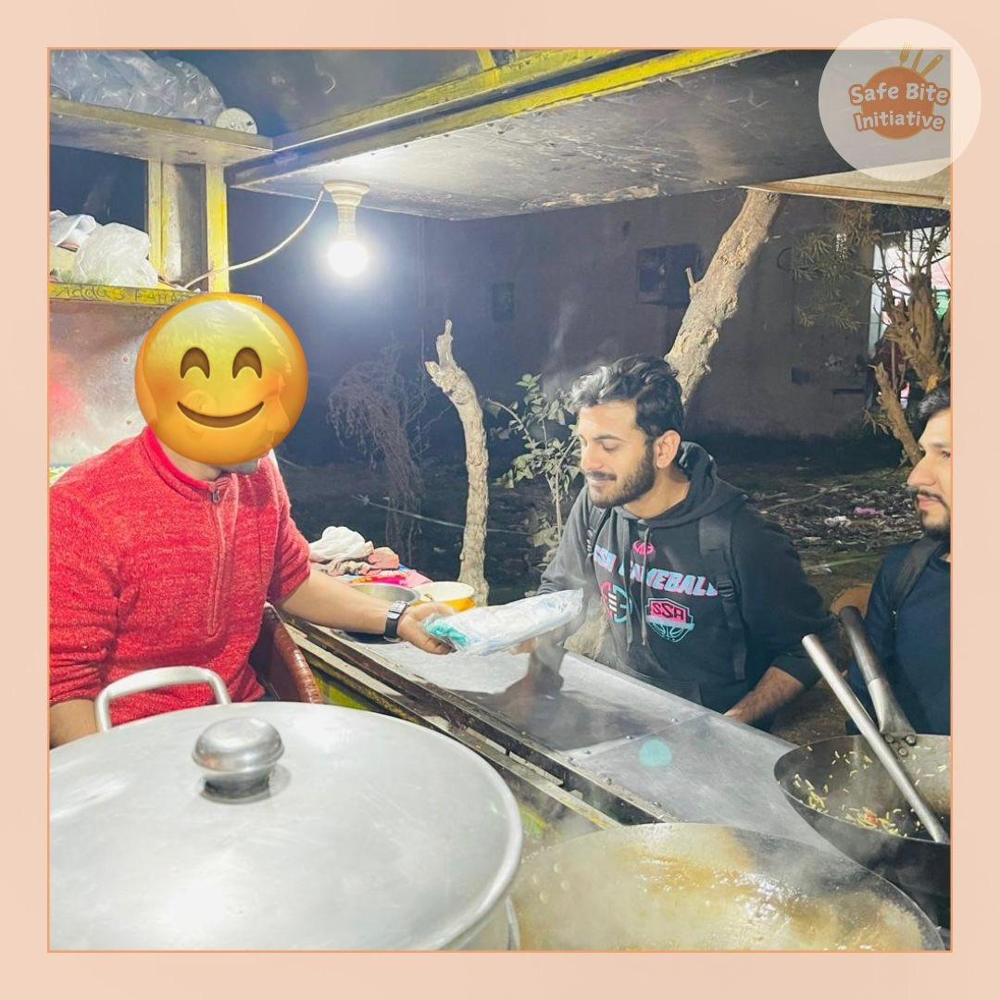
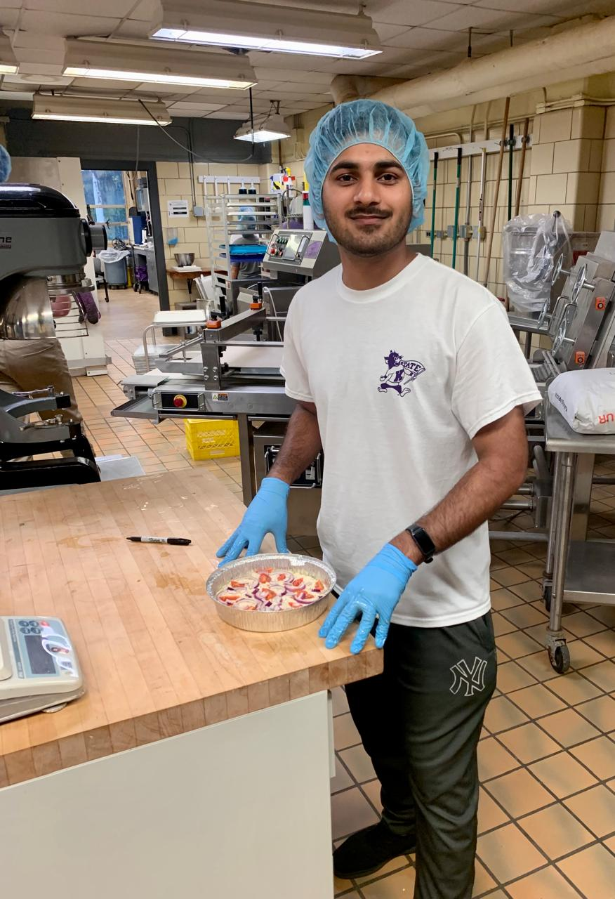
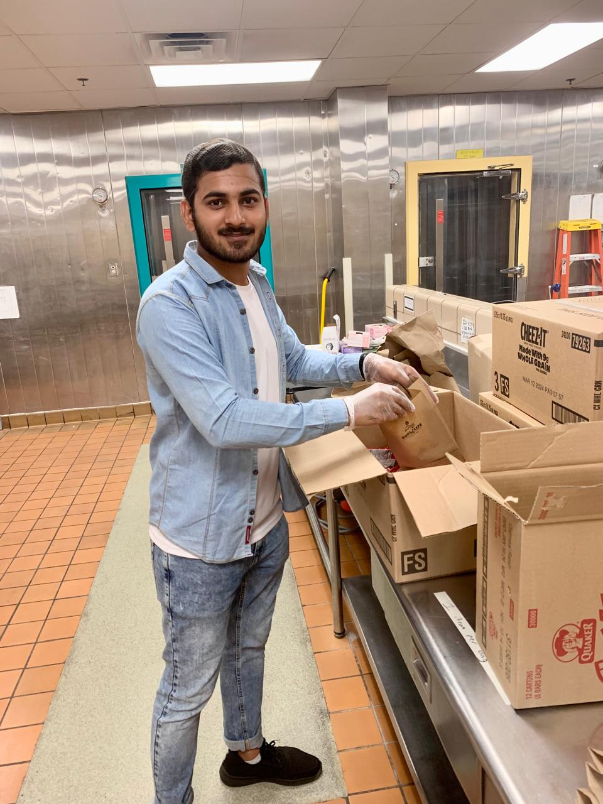
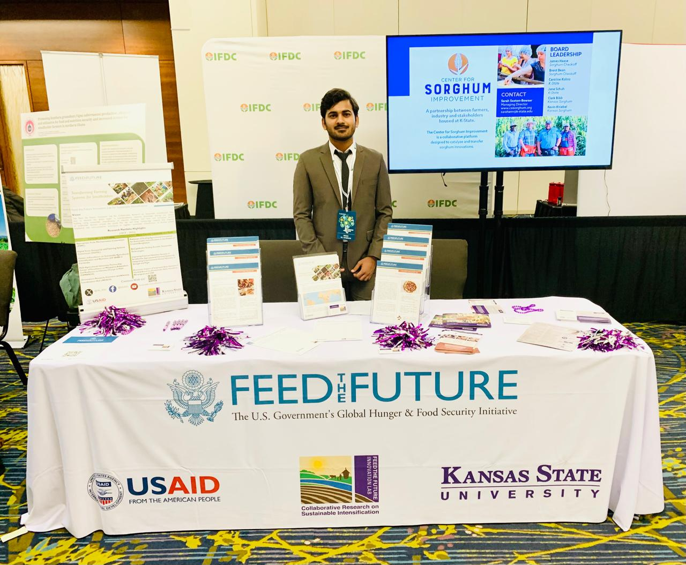
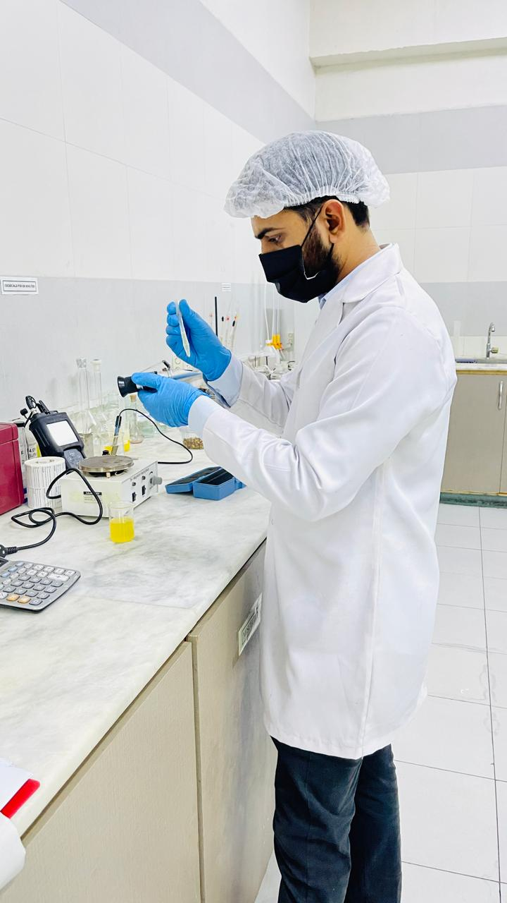
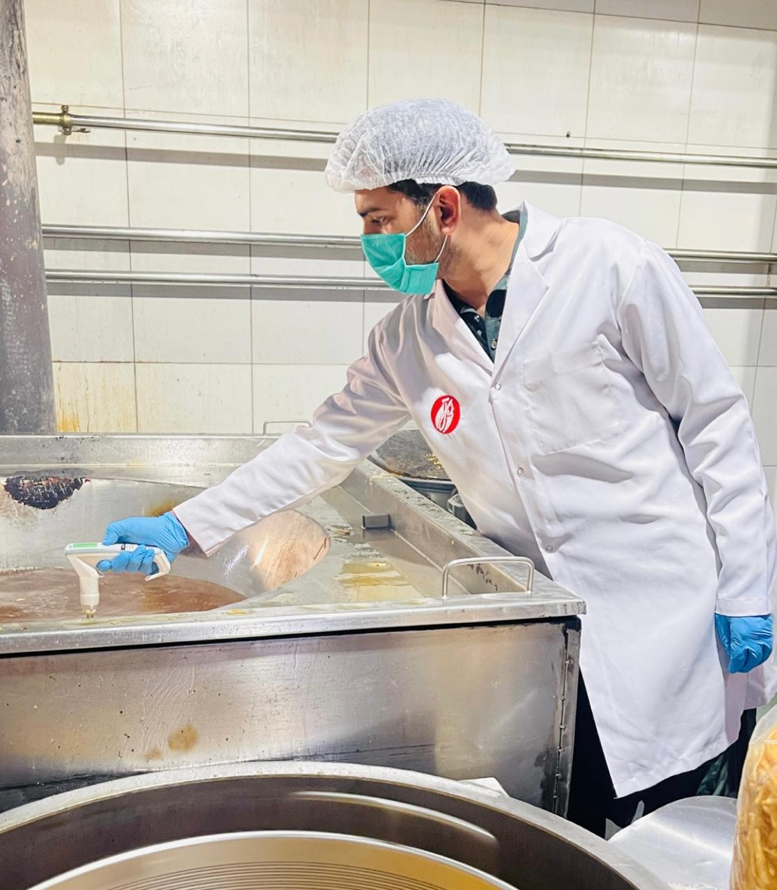

Thesis
Chickpea Truffles
My thesis. I compared the nutrition profile of Desi and Kabuli chickpeas, then used both to make energy-dense chocolate truffles. I tested their taste, storage and color.
Food Science Professional
I’m passionate about
I’m a Food Science and Technology graduate who likes turning everyday ingredients into foods people enjoy.

Gold Medalist UGRAD Scholar 4.00 CGPAI graduated from the University of Central Punjab with a CGPA of 4.00/4.00 and a Gold Medal. I love developing food products that are nutritious and that people actually want to eat, and I want to learn how to design them properly, from the first idea to the finished product.
My thesis. I compared the nutrition profile of Desi and Kabuli chickpeas, then used both to make energy-dense chocolate truffles. I tested their taste, storage and color.

A snack made with dates and mixed seeds. It won 3rd place in my university’s Food Innovation Competition.

Eucalyptus, honey and lime lozenges, made in my confectionery course.

A hygiene project I started for street food vendors in Lahore. With my Head of Department, I trained volunteers, and we gave protective equipment and hygiene guidance to 30 vendors. It was supported by a U.S. Department of State and IREX Community Development Initiative Award.

It was a fully funded semester exchange program at Kansas State University, where I studied Science of Food, Food and Health, American History and Public Speaking. I was actively involved in volunteer work, and I also delivered a presentation on Pakistani culture at an elementary school there.

Every week I worked there to pack and distribute meals for K-State students and their families.

I was selected to represent Kansas State University at its Feed the Future Innovation Lab table.


I worked as a Food Safety Officer in a food factory, testing moisture, Brix, gluten, and so on at different stages of production.